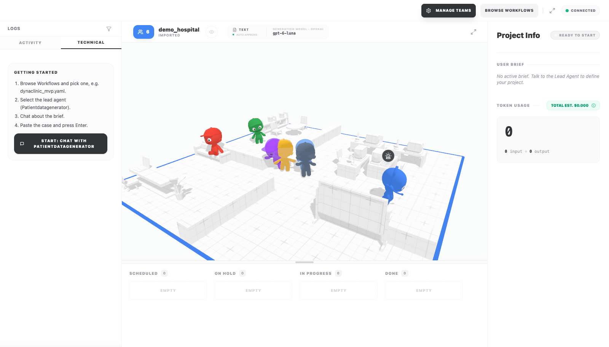
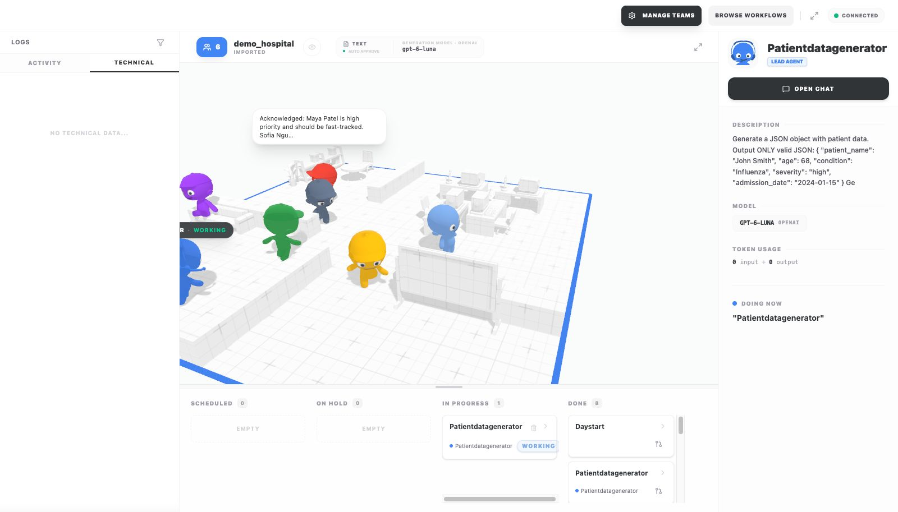
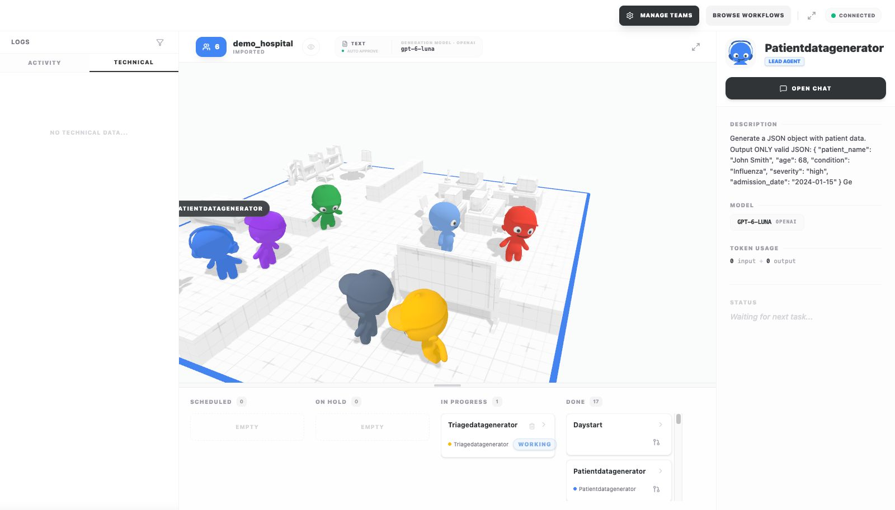
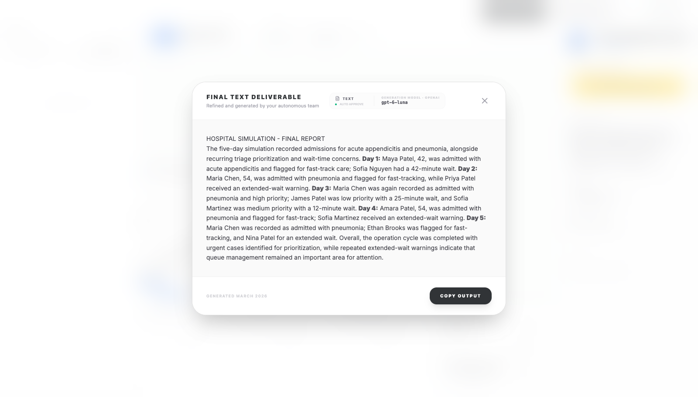

The run, end to end
One continuous headless-Chrome screencast (2:38): fresh browser profile, import demo_hospital.yaml, chat with the lead, run to the final report. Idle stretches longer than 2.5 s are shortened; nothing else is cut or staged. Code be54e5a (f16 to f23), recorded 2026-10-28.




What the run did (from its own output)
| Node | Runs | First output |
|---|---|---|
| DayStart (literal) | 5 | Starting hospital operations |
| PatientDataGenerator | 5 | JSON patient: Maya Patel, 42, acute appendicitis |
| AdmissionReport | 5 | Maya Patel, 42, was admitted with acute appendicitis. |
| TriageDataGenerator | 5 | JSON triage queue |
| TriageReport | 5 | Acknowledged: Maya Patel is high priority and should be fast-tracked. Sofia Nguyen has an extended wait time of 42 minutes. |
| DailySummary | 5 | Maya Patel, 42, was admitted with acute appendicitis; triage marked her high priority... |
| LoopGate (loop timer, 60 s) | 5 | releases after the time limit |
| FinalReport | 1 | HOSPITAL SIMULATION - FINAL REPORT (five days) |
26 model calls, 3,631 input + 3,653 output tokens, all gpt-6-luna. Memory daily_summaries.json: 5 entries, one per day, all written by DailySummary. Run folder WareHouse/session_1f7f0534-....
What was fixed to get here
- Characters meet and talk on hand-offs; up to 13 characters; final output and kanban for non-agent nodes (f16).
- Edge processors actually run. The YAML used
processor:, which the engine ignored, so the patient and triage templates and the day counter never ran; the key is nowprocess:and the old one is a load error (f17). - Each run has its own memory.
{{run_dir}}inmemory_pathresolves to the run folder; before, every run read and wrote one shared file, so a second run's report quoted the first run's days (f17). - Real embeddings. Memory retrieval asked the chat model for embeddings and failed on every lookup; demo_hospital now uses OpenAI gpt-6-luna and text-embedding-3-small (f18).
- gpt-6-luna works in any DevAll workflow. The provider sent a default temperature the model rejects; it now retries once without it and remembers (f19).
- Admissions reach the report. DailySummary only received the triage report, so every summary said "no admissions noted"; a data edge (
trigger: false) now also hands it that day's admission, AdmissionReport always restates name, age and condition, and FinalReport only reads the memory instead of writing its own report into it (f21, f23). - Readable bubbles, spread-out meetings in the 3D office (f22).
The final report, verbatim
HOSPITAL SIMULATION - FINAL REPORT The five-day simulation recorded admissions for acute appendicitis and pneumonia, alongside recurring triage prioritization and wait-time concerns. Day 1: Maya Patel, 42, was admitted with acute appendicitis and flagged for fast-track care; Sofia Nguyen had a 42-minute wait. Day 2: Maria Chen, 54, was admitted with pneumonia and flagged for fast-tracking, while Priya Patel received an extended-wait warning. Day 3: Maria Chen was again recorded as admitted with pneumonia and high priority; James Patel was low priority with a 25-minute wait, and Sofia Martinez was medium priority with a 12-minute wait. Day 4: Amara Patel, 54, was admitted with pneumonia and flagged for fast-track; Sofia Martinez received an extended-wait warning. Day 5: Maria Chen was recorded as admitted with pneumonia; Ethan Brooks was flagged for fast-tracking, and Nina Patel for an extended wait. Overall, the operation cycle was completed with urgent cases identified for prioritization, while repeated extended-wait warnings indicate that queue management remained an important area for attention.
The patients are synthetic and invented by the PatientDataGenerator agent each day; repeated names (Maria Chen on days 2, 3 and 5) are the model's choice, not a memory leak (each day's summary is written once; the memory holds exactly five entries).
Run it yourself
# repo root; .env needs OPENAI_API_KEY and OPENAI_BASE_URL
env -u PYTHONPATH -u VIRTUAL_ENV uv run python server_main.py --port 6400
cd the-delegation && npx vite --port=3100 --host=127.0.0.1 --strictPort
# open localhost:3100/the-delegation/ -> Browse Workflows -> demo_hospital.yaml -> reload -> Start: chat with the leadHeadless, without the 3D office: echo "Run the hospital simulation." | uv run python run.py --path yaml_instance/demo_hospital.yaml --name demo.